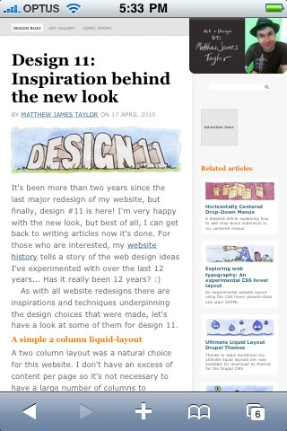

Design 11: Inspiration behind the new look
by Matthew James Taylor on 17 April 2010
It's been more than two years since the last major redesign of my website, but finally, design #11 is here! I'm very happy with the new look, but best of all, I can get back to writing articles now it's done. For those who are interested, my website history tells a story of the web design ideas I've experimented with over the last 12 years... Has it really been 12 years? :)
As with all website redesigns there are inspirations and techniques underpinning the design choices that were made, let's have a look at some of them for design 11.
A simple 2 column liquid-layout
A two column layout was a natural choice for this website. I don't have an excess of content per page so it's not necessary to have a large number of columns to organise everything. I chose a wide left column for my main content and a greyed-out right column for secondary content because this configuration makes my articles come first on the page visually and in the HTML source.
A liquid layout is always my favourite option for websites because they perform much better from a usability perspective. They also make the best use of available screen real estate. Liquid layouts do have their complications particularly when working with images but we can solve this with CSS, more on that later. The final design is a lot like my perfect right menu liquid-layout only with a few minor alterations and additions.
A friendly design focused on content
I really wanted my main content to be the focus rather than the design of the page, so all style decisions were made in light of this goal. The overall page design was given minimal treatment in grey so it slipped into the background and provided a good base. I chose a large, black headline to catch attention for the main content and I illustrated each blog post with a watercolour painting. The colours really make them stand out above the pale grey background. I enjoyed painting all the illustrations even though it was a big job, I haven't added much work to my art gallery lately but all this painting has given me inspiration.
I put my main website logo in the top, right of the page so each article had more room to appear 'above the fold' on the left. The photo of me was taken by Felicity a little while ago and I just love the bright green background. I use this photo for my favicon and gravatar now too.
Fluid images
For a long time I've wrestled with images in my liquid-layouts. Up until now I've never been 100 per cent happy with how they've behaved when the page was at different resolutions. In my last design I had square thumbnail images for each blog post with a brief description to one side, these looked okay on large resolutions but when the page was narrow the column of text got ridiculously long.
The solution is actually very simple: use wide images with the text placed below. I can't believe it took me so long to figure that out. There is a trick of course, and that is this, the images must also scale along with the rest of the page layout.
Scaling images to fit a design in all browsers is a bit tricky but this fluid images article by the Unstoppable Robot Ninja helped me enormously.
iPhone / iPod Touch compatible design
Mobile internet browsing is becoming more popular than ever, particularly for iPhone users, so it makes sense to have a mobile-friendly design. I have paid particular attention to this while developing design 11. I constantly test on my iPhone. Having a fluid-width layout helps a lot but I've also made sure that things are optimised for the 980 pixel width that the Safari browser defaults to. For example on my art pages I've made sure that two columns of related art thumbnails are visible on the right. In addition to this my art and blog post thumbnails are all big rectangular links that are very easy to tap even with fat fingers!
So that's a brief overview of the main features of this new design. I hope you like it. I will continue to make minor improvements over the next few weeks. If you notice anything out of place let me know so I can fix it... Happy web designing folks!
Tagged:
Enjoy this article?
If you find my website useful, feel free to donate any amount you wish. It will help pay for my hosting! =)